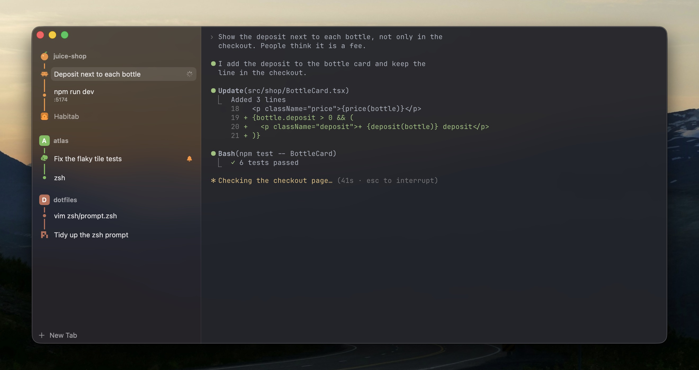
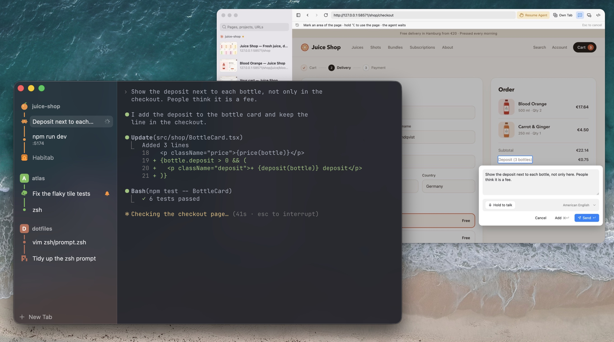
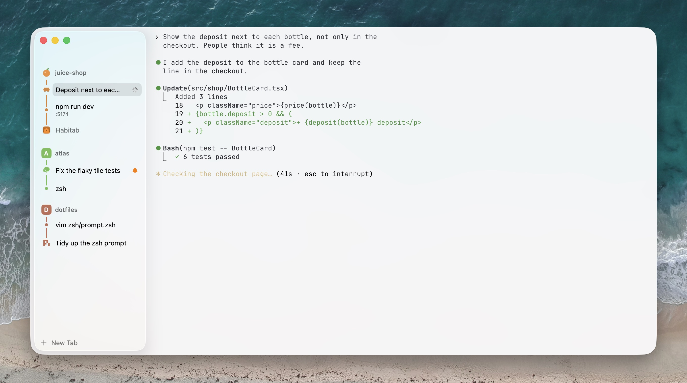
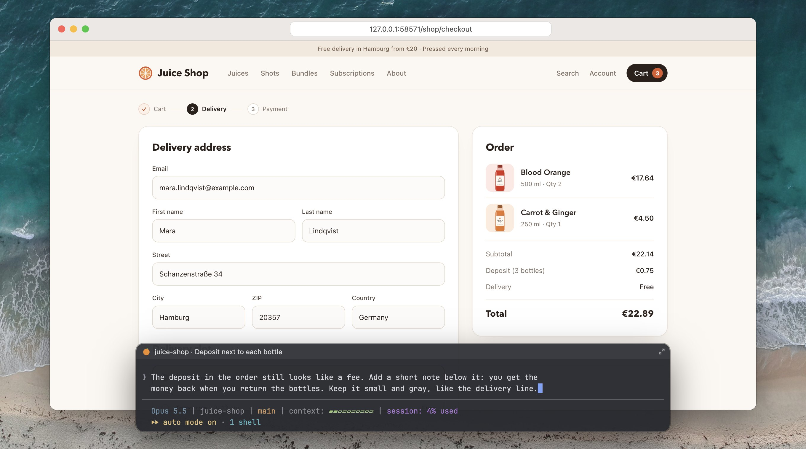

A home for your shells.
Shellter is a Mac terminal with vertical tabs, grouped by project. It shows which tab works and which one waits for you. And when a tab opens another app, you find its window there too.
Free and open source · macOS 14 or later · Apple silicon · Built on libghostty

Status at a glance
See which tab waits for you.
You start a build in one tab and an agent in another. Then you work on. Shellter tells you when something needs you.
- Working
- A program reports progress, or shows a spinner in its title.
- Needs you
- A program rings the bell or sends a notification, or it finished while you looked at another tab.
- ⌘J
- Go to the next tab that needs you.
The Dock icon counts the tabs that need you. It bounces when a tab in the background starts to need you.
Other apps, too
Opened from the terminal. Found in the sidebar.
When a program in a tab opens another app, its window shows below the project: the browser that your coding agent starts, or the PDF that open shows. A click brings it to the front.

Fonts and themes
Make it yours. The sidebar follows.
Shellter comes with 12 coding fonts and the 450+ themes of Ghostty. It also finds the themes of VS Code, Cursor and other editors, and it can follow the theme of your editor. The sidebar takes the colors of the terminal.
- Transparency with frosted glass, and three sidebar styles: terminal colors, the macOS sidebar, or floating glass on macOS 26.
- Import
.itermcolorsor VS Code theme files. - Shellter reads your Ghostty config too.

Copy and paste
Copy from an agent. Paste clean text.
Coding agents draw their answers for the terminal: with markers, indents, quote bars and a line break wherever a line is full. Copy that into a mail or a chat, and you clean it up by hand. In a tab with a coding agent, Shellter does that for you.
- Markers, indents and quote bars go. Paragraphs, lists and tables stay.
- Works with Claude Code, Codex and Antigravity.
- ⌥⌘C copies the text as the terminal shows it.
⏺ Here is the draft: ▎ Hi Sam, the new server is ready. Could↵ ▎ you check two reports on Friday before↵ ▎ we switch the traffic? ▎ ▎ 1. Save the totals of two reports from↵ ▎ the last import. ▎ 2. Compare them after the switch.
Here is the draft: Hi Sam, the new server is ready. Could you check two reports on Friday before we switch the traffic? 1. Save the totals of two reports from the last import. 2. Compare them after the switch.
Compact Mode
Talk to your agent. Keep the screen free.
You want to tell your agent what is wrong with a page, but the terminal covers the page. Press ⇧⌘K, and the tab becomes a small panel that floats above all apps. You see only the agent's input and status line. Type or dictate while you look at the screen.
- The terminal keeps its size, so the agent's UI does not change.
- Scroll in the panel to read the last answer.
- Put the panel where you want it. ⇧⌘K brings the window back.

Compare
How Shellter compares to other tools
All three are good tools. Shellter has a smaller job: a normal terminal that keeps your projects in order.
GhosttyA fast, native terminal for macOS and Linux, with tabs at the top and splits.
Shellter uses the same terminal engine, libghostty, and reads your Ghostty config. It adds what a tab bar cannot show: tabs grouped by project, their status and the windows that belong to them. Shellter has no splits.
cmuxAlso built on libghostty, with vertical tabs and a full workspace for coding agents.
cmux adds splits, a browser that agents can script, SSH workspaces and a CLI to control it all. Shellter does less on purpose: it groups tabs by Git repository, and it leaves the browser to a real browser or to Habitab, and shows that window in the sidebar. cmux on GitHub
T3 CodeNot a terminal: an app that runs coding agents in its own chat view.
T3 Code runs on web, desktop and mobile, starts Codex, Claude Code and other agents, and shows their work in one interface. In Shellter, each agent runs in its own terminal interface, as you know it, next to your shells, dev servers and editors. T3 Code on GitHub
Get Shellter.
Free and open source. For Macs with Apple silicon and macOS 14 or later.
curl -fsSL https://raw.githubusercontent.com/fgnass/shellter/main/install.sh | sh
Paste it in Terminal. The script downloads the latest release, checks it, installs it in ~/Applications and opens it. Run it again to update.
Build it yourself
You need Xcode, Zig 0.17 or later, XcodeGen and the Metal toolchain.
git clone --recursive https://github.com/fgnass/shellter
cd shellter
./scripts/build-ghostty.sh
./scripts/build-zmx.sh
./scripts/build.shAll details, shortcuts and config files are in the README.